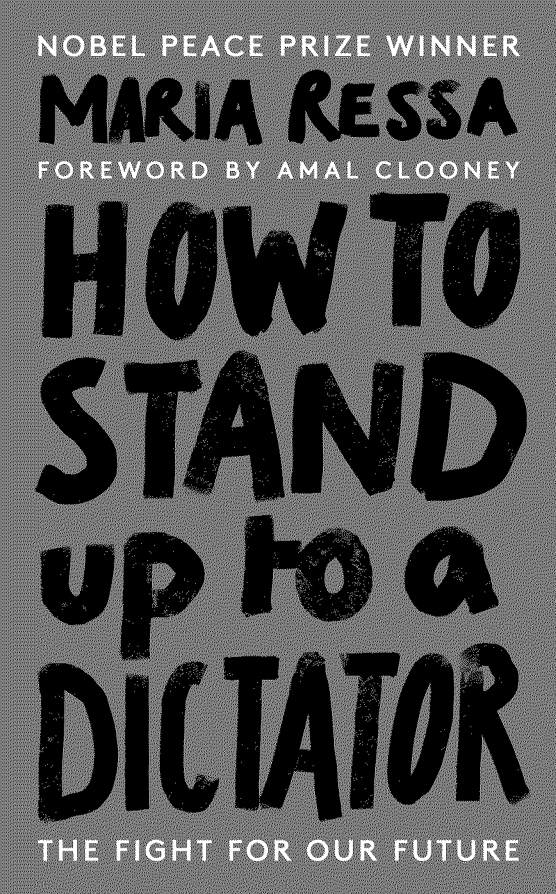

published on November 17, 2022 by Random House
What will you sacrifice for the truth? Maria Ressa has spent decades speaking truth to power. But her work tracking disinformation networks seeded by her own government, spreading lies to its own citizens laced with anger and hate, has landed her in trouble with the most powerful man in the country: President Duterte.
Now, hounded by the state, she has multiple arrest warrants against her name, and a potential 100+ years behind bars to prepare for - while she stands trial for speaking the truth.
How to Stand Up to a Dictator is the story of how democracy dies by a thousand cuts, and how an invisible atom bomb has exploded online that is killing our freedoms. It maps a network of disinformation - a heinous web of cause and effect - that has netted the globe: from Duterte’s drug wars, to America’s Capitol Hill, to Britain’s Brexit, to Russian and Chinese cyber-warfare, to Facebook and Silicon Valley, to our own clicks and our own votes. Told from the frontline of the digital war, this is Maria Ressa’s urgent cry for us to wake up and hold the line, before it is too late.
Summary
Themes
3 Main Takeaways
Quotes
the world as it should be: more compassionate, more equal, more, sustainable. A world that is safe from fascists and tyrants.
Democracy is fragile, you have to fight for every bit, every law, every safeguard, every institution, every story.
You don’t know who you are until you’re forced to fight for it.
Other Notes
What is the Invisible Atom Bomb?
- The Philippines’ Commission on Human Rights estimated that about 27, 000 people were killed between 2016 and 2018 while Rodrigo Duterte waged his war on drugs.
- 2021 was the 6th year in a row that Filipinos spent the most time on the Internet and on social media.
- 1 in 27 Trump followers was from the Philippines.
- Ressa calls the accelerating risk of authoritarianism and dictatorships fuelled by social media “democracy’s death by a thousand cuts”.
- Tech platforms have given geopolitical powers a way to manipulate each of us individually.
- Russia had been seeding metanarratives about Ukraine since 2014, allowing them to invade in 2022.
- This happened when Russia invaded and eventually annexed Crimea.
- Since 2018, we’ve known that lies laced with anger and hate spread faster than facts.
- In 2022, when the Phillipines had their general election, one of the key candidates was the only son of former dictator Ferdinand Marcos.
- By the end of the count Ferdinand Romualdez Marcos Jr. has 18.98 million votes.
- Ferdinand Marcos was first of the kleptocrats and was accused of stealing $10 billion from the Filipino people.
The invisible atom bomb is social media and the power of disinformation networks. When you don’t have integrity of facts, you can’t have integrity of information.
How Can We Make the Choice to Learn? (Chapter 1)
- Rudyard Kipling published an imperialist poem “The White Man’s Burden” which encouraged American’s to govern the Philippines in 1899.
- The Philippines constitution, which was fundamentally a re-write on the American constitution had to be approved by the US President Franklin D. Roosevelt.
- Former dictator Marcos